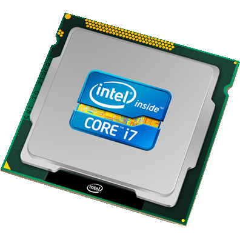
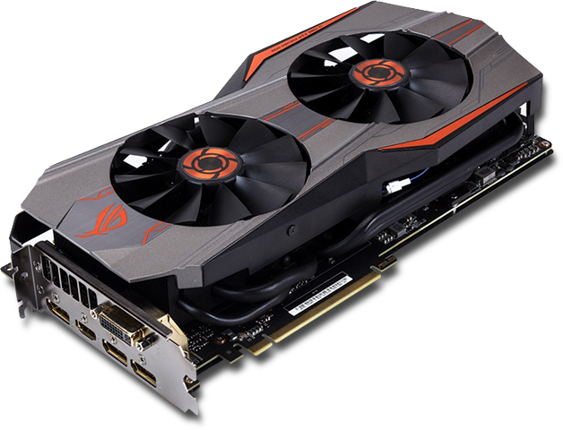
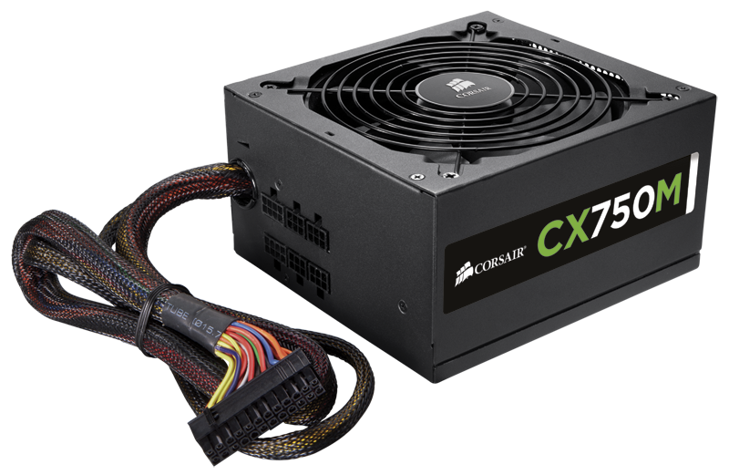

What is A Computer Made of?
 A computer is full of a variety of components that each play a critical part in making a computer function. These parts include the processor(CPU), the motherboard, ram, the power supply(PSU) the hard drive, and the video card(GPU).
A computer is full of a variety of components that each play a critical part in making a computer function. These parts include the processor(CPU), the motherboard, ram, the power supply(PSU) the hard drive, and the video card(GPU).
CPU and GPU
The CPU is the brain of the computer and is probably the most important part in the computer. The CPU allows the computer to process files and runs through a series of instructions called a program. The GPU is not necessary for a computer to work, but it is important if you play games and movies.


Motherboard
The motherboard is a circuit board. This is like the torso of the computer. It connects all of the components together through wires so that they can work together to successfully function.

Ram and Hard Drive
The ram is a small memory stick that your computer uses to store unimportant files such as internet history. The hard drive contains more storage and stores your important files such as downloads.


PSU
The PSU is what powers the whole computer. This is where electricity is drawed out of your outlet and into your PSU where it is then dispersed into the computer to power the other components.
